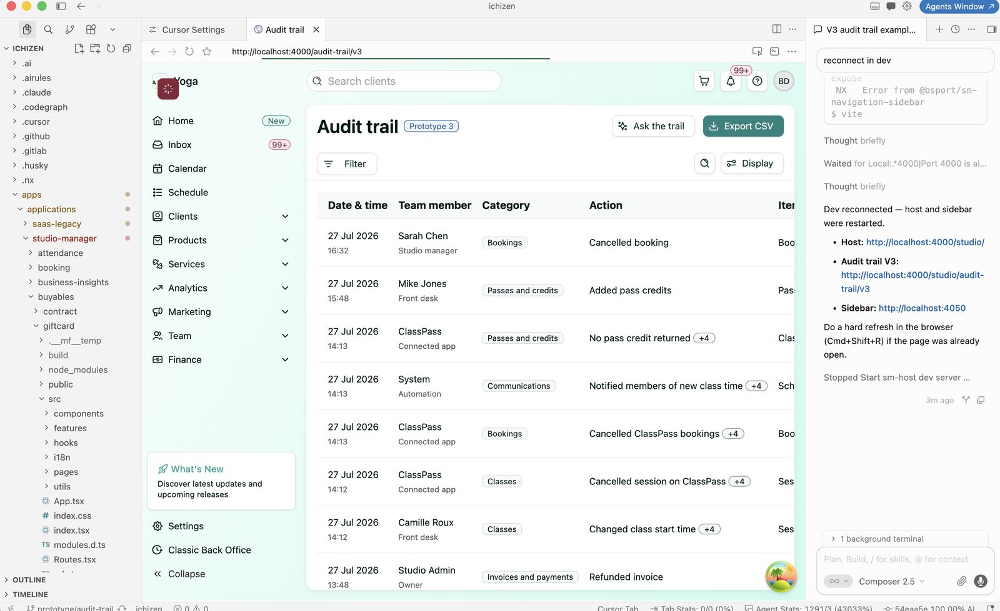

Problem to solve
Most design workflows lose time at the seams — between research and requirements, between static mockups and working code, between "looks right" and "works right." This flow closes those gaps by bringing an AI pair-programmer into the process early: instead of a polished static comp, the prototype is a real, AI-generated, running interface from the start — reviewed the same way engineering reviews code, through a merge request, on a live disposable environment, with actual users clicking through it.
The flow
- Discovery & research — grounding the problem before any screen exists: gathering existing research, prior art, support tickets, and usage data into a shared set of docs.
- Alignment with product — the first real touchpoint with the PM, walking through the PRD together to pin down requirements and negotiate scope.
- Rapid prototyping, in code, with AI — a static Figma pass settles layout where needed, but the prototype that actually gets tested is built with Cursor, turning requirements straight into working code. It's pushed to GitLab like any other change, spinning up an ephemeral environment — a temporary, shareable, live instance of that branch — so reviewers react to a real running interface, not a flat image.
- Validate with users — the ephemeral environment's link makes testing lightweight: no build step, no local setup, just a URL. Feedback goes back into the same branch before anything is final.
- Handoff to engineering — because the prototype already lives in GitLab as real code, handoff is a continuation of the same merge request, not a separate export step.

Cursor connected to the project repo, with the Audit trail V3 prototype running against the local dev environment — AI panel on the right coordinating the dev server.
Featured prototype — Audit trail V3
A concrete example of the flow in practice. "Audit trail" gives studio owners and staff a searchable, filterable log of everything that happens on their account — bookings, passes & credits, communications, classes, and invoices & payments — including automated events from connected apps like ClassPass. It supports CSV export and an AI-powered "Ask the trail" query bar for asking questions about the log in plain language.
This was built as a fully functional, working prototype in a single day — not a static mockup — running against a live local dev environment inside Cursor, and used throughout the process to validate the feature with real stakeholders before any of it was rebuilt for production.
Audit trail V3 running as a working prototype — filtering, search, CSV export, and the "Ask the trail" AI query bar, all functional on day one.
Why this flow works
- Fewer translation losses — design intent survives handoff because it's already expressed in code, not re-interpreted from a static file.
- Real feedback, earlier — users react to something that actually behaves like the product, catching issues static mockups can't reveal.
- One source of truth — the prototype, the review, and the eventual implementation all live in the same GitLab history.
- Shareable by default — ephemeral environments turn every prototype into a link anyone can open, no setup, no context lost.